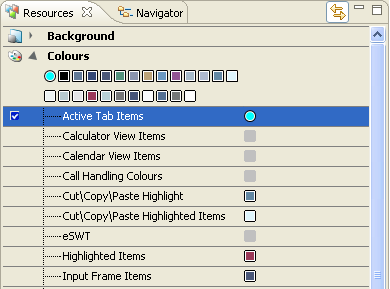

You can drag and drop the color from the
Referenced Colors
view to any levels
in the Colors hierarchy of the
Resources
view. The selected components (from the Colors hierarchy) are linked
to the selected reference color.

Figure:
Changed color in
resource view
Now, you can e.g. change the color of the root or its intensity and the
color change is reflected in the referenced elements. Graphics and
icons can also be linked to the referenced colors by dragging the color
from the
Referenced Colors
view to the
Layers view.